请注意时效性
服务器
目前，阿里云在搞活动学生活动(发稿日期2020.5.24)，可以免费领半年的服务器。白嫖他不香吗？
NodeJS
下载与安装
- node下载 官网下载
.msi和.zip安装包的区别
- .msi是Windows Install开发出的安装程序文件,可以安装、修改、卸载你所安装的程序。方便后期管理，系统也会自动添加注册表信息、系统变量等。
- .zip是标准压缩包格式，需要手动解压，放到想要的位置。
下载完成后，双击安装包，开始安装，一直点next即可，默认安装路径在c:\Program Files下，建议修改
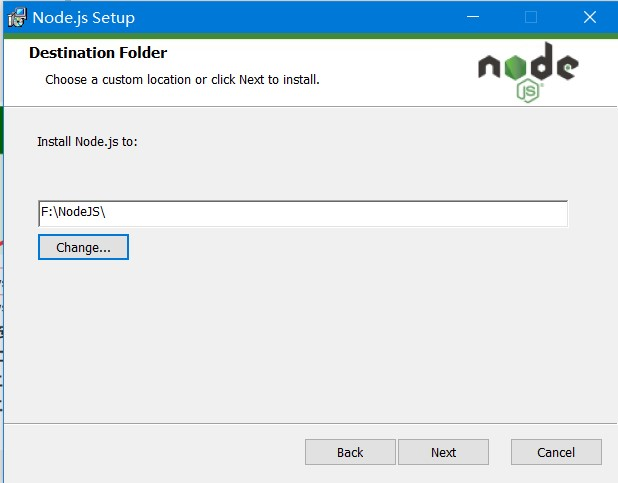
可选功能解释：
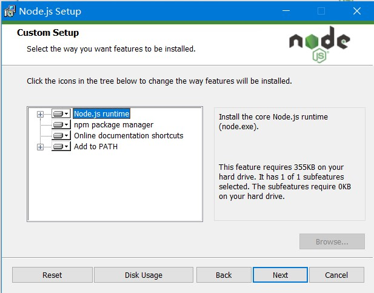
1 | Node.js runtime 表示运行环境 |
建议默认的全部安装，点击next即可
安装完成后，.msi格式的安装包已将node启动程序添加到系统环境变量path变量中，查看系统变量验证
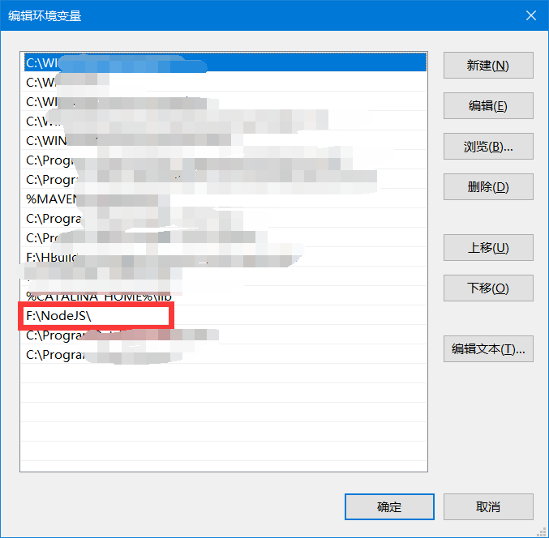
打开CMD窗口，输入指令验证是否安装成功
1
2node -v
npm -v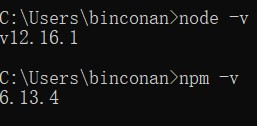
修改包路径
默认情况下,我们在执行npm install -g XXXX的时候，下载了一个全局包，这个包的默认路径是C:\Users\Administrator\AppData\Roaming\npm\node_modules下，但是大多数情况下我们并不想让它下载这个位置，所以我们需要做一个修改。我们把他放在Node的安装目录f:\NodeJS下，便于统一管理
在node安装目录下新建两个文件夹
node_global全局包下载存放node_cachenode缓存存放目录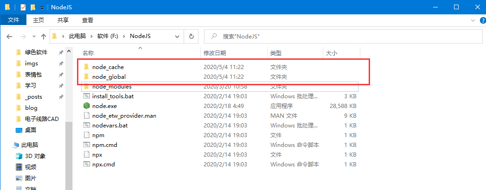
在CMD窗口执行以下两条命令
1
2
3npm config set prefix "C:\node\node_global"
npm config set cache "C:\node\node_cache"
或者在nodejs的安装目录中找到node_modules\npm\.npmrc文件，修改如下
1 | prefix=C:\node\node_global |
修改系统变量
我们修改了npm全局模块的存放路径和cache路径，我们需要修改系统变量，否则在使用node指令会报错
修改用户变量path为f:\NodeJS\node_global，即为你安装目录下的node_global文件夹
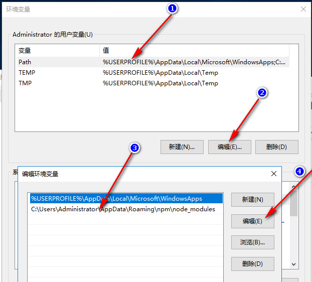
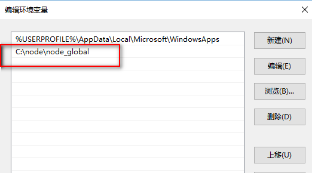
新增系统变量node_path，变量值为f:\NodeJS\node_global\node_modeules
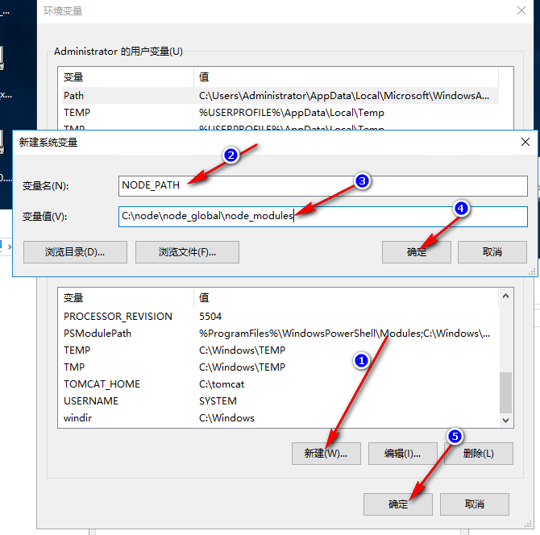
到此，NodeJS安装配置（呼~~），大功告成！
Hexo
安装Git
在本地电脑上安装Git
Git是目前世界上最先进的分布式版本控制系统，可以有效、高速的处理从很小到非常大的项目版本管理。同时也需要git传到你的服务器和获取hexo。官网下载
下载后一路next就行。和nodejs差不多，不再赘述。
生成SSH认证，打开Git执行命令如下
1
2
3
4
5git config --global user.name "yourname"#你的Github用户名
git config --global user.email youremail@example.com #你的Github用户邮箱
ssh-keygen -t rsa -C "youremail@example.com" #重复邮箱获取到的ssh认证在C:\Users\yourname.ssh下
安装Hexo
新建一个文件夹，用于存放hexo文件（我创建的文件夹为blog），然后右键在此文件打开git bash。或者直接打开git bash，使用cd 命令进入blog文件夹
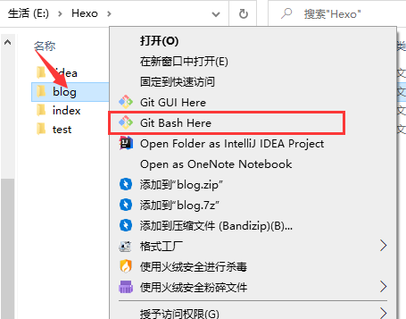
打开的命令行中，会显示当前的位置 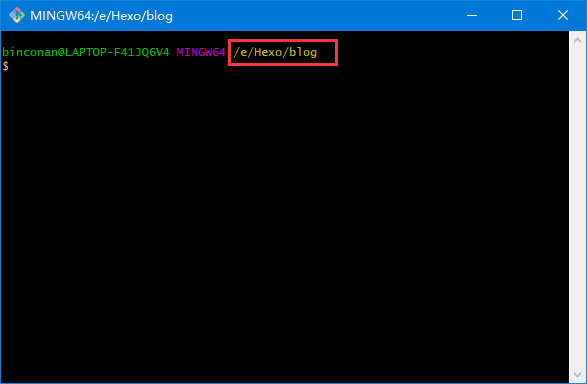
安装hexo 命令：npm i -g hexo
安装完成后，使用 hexo -v查看版本信息（
我已经安装过hexo，此处我使用了新的文件夹作为演示）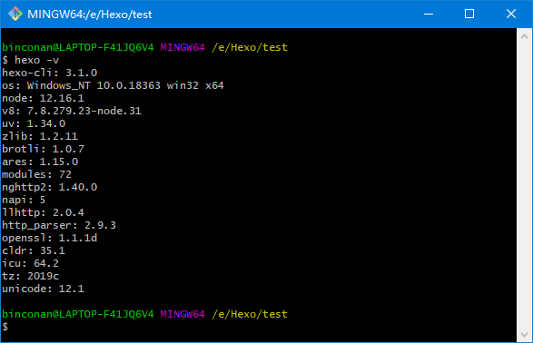
初始化命令 hexo init，初始化完成后打开文件夹。
此处，初始化hexo相当于是从github上拉取repositories，所以初始化速度取决于你从github上下载的速度，可能会很慢，耐心等待即可。本人脸黑，用了七、八分钟才搞好。
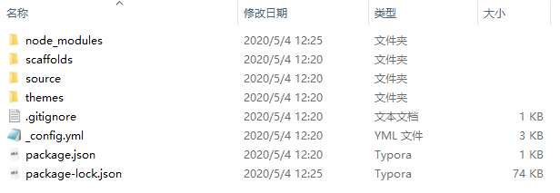
解释一下
node_modules：是依赖包
public：存放的是生成的页面
scaffolds：命令生成文章等的模板
source：用命令创建的各种文章
themes：主题
_config.yml：整个博客的配置
db.json：source解析所得到的
package.json：项目所需模块项目的配置信息
hexo3.0把服务器独立成单独的模块，需要单独安装
npm i hexo-server
回到git中，进入blog目录，分别执行
1
2
3hexo clean //hexo清理命令
hexo generate //生成静态文件，简写 hexo g
hexo server //启动hexo服务器，默认情况下访问地址为 http://localhost:4000/
- 关于Hexo主题选择，以及其他主题修改 请自行百度 本教程中使用的是Next主题
服务器
教程使用版本：CentOS 7 阿里云ECS服务器
使用 Xshell 进行远程服务器连接，使用 Xftp 进行文件传输
服务器配置
安全组配置
安全组放行 需要80(访问端口),443(SSL证书安全访问端口,如果需要的话)
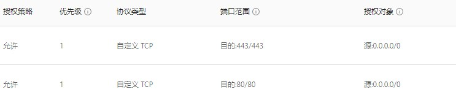
服务器环境配置
编译工具和库文件
为了防止在安装编译Nginx过程中出现各种问题，需提前安装编译工具和库文件
使用命令：
1 | yum -y install make zlib zlib-devel gcc-c++ libtool openssl openssl -devel |
安装PCRE
为了让Nginx支持Rewrite功能，安装PCRE，下载PCRE安装包，下载地址
或者使用命令
1
2cd /usr/local/src/
wget http://downloads.sourceforge.net/project/pcre/pcre/8.35/pcre-8.35.tar.gzPCRE配置
1
2
3
4
5tar vzf pcre-8.35.tar.gz#解压安装包
cd pcre-8.35#进入源码包
./configure #配置
make && make install #编译和安装
pcre-config --version #查看安装版本和信息
搭建远程Git私库
为什么要这么做？看下图↓
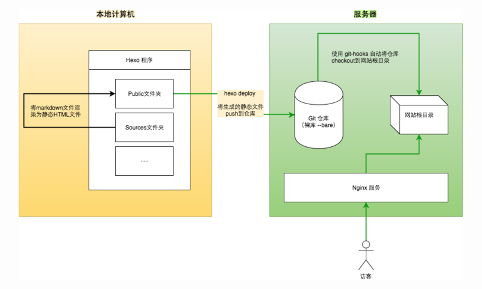
登录到远程服务器，推荐使用Xshell
安装git
1
2
3git --version #如无，则需要安装
yum install curl-devel expat-devel gettext-devel openssl-devel zlib-devel perl-devel
yum install -y git创建用户并配置仓库
1
2
3
4
5
6
7
8
9useradd git
passwd git # 设置密码
su git # 切换用户
cd /home/git/
mkdir -p projects/blog # 项目存在的真实目录
mkdir repos && cd repos
git init --bare blog.git # 创建一个裸露的仓库
cd blog.git/hooks
vi post-receive # 创建 hook 钩子函数，输入以下内容1
2
git --work-tree=/home/git/projects/blog --git-dir=/home/git/repos/blog.git checkout -f添加完毕后修改权限
1
2
3chmod +x post-receive
exit #退出到 root 登录
chown -R git:git /home/git/repos/blog.git # 添加权限测试git仓库是否可用，找一个空白文件夹
1
git clone git@server_ip:/home/git/repos/blog.git
如果能把空仓库拉下来，就说明仓库搭建成功了
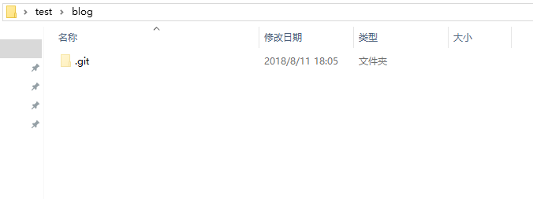建立
ssh信任关系，在本地电脑server_ip为你的服务器地址1
2ssh-copy-id -i C:/Users/yourname/.ssh/id_rsa.pub git@server_ip
ssh git@server_ip # 测试能否登录
Nginx
本教程的Nginx安装目录 /usr/local/nginx
Nginx下载
下载Nginx，下载地址 下载后使用ftp传入linux，或者使用命令
1
2cd /usr/local/src/ #进入到src目录，通常将源码放入此包
wget http://nginx.org/download/nginx-1.6.2.tar.gz #使用weget 获取源码包编译安装Nginx
1
2
3
4tar zxvf nginx-1.6.2.tar.gz #解压安装包
cd nginx-1.6.2 #进入源码包
./configure --prefix=/usr/local/nginx --with-http_stub_status_module --with-http_ssl_module --with-pcre=/usr/local/src/pcre-8.35 #with-prce=后的目录为你prce的安装路径 prefix为你要安装nginx的路径
make && make install #安装使用命令查看nginx版本
/usr/local/nginx/sbin/nginx -v
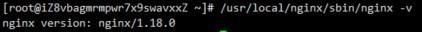
Nginx配置
创建Nginx运行使用的用户www：
1
2/usr/local/nginx/sbin/groupadd www
/usr/local/nginx/sbin/useradd -g www www配置conf文件
将user 修改为root
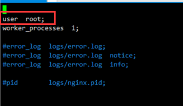
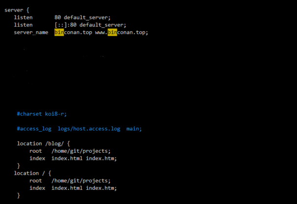
server_name修改为你的域名，或者服务器ip对于location的修改，改为/home/git/projects/blog。更多关于location的修改攻略查看这里
发布
配置_config.yml文件
以下文件均在本地的blog文件夹下
编辑_config.yml的deploy属性
repo: git@服务地址:/home/git/repos/blog.git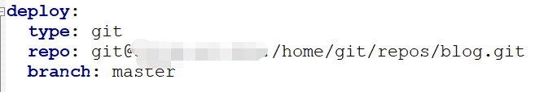
编辑
package.json文件，添加脚本1
2
3
4
5"scripts": {
"deploy": "hexo clean && hexo g -d",
"start": "hexo clean && hexo g && hexo s" },
npm run start可以快速完成更新，便于测试使用
npm run deploy部署到服务器指令
配置安全证书
教程使用阿里云签发的免费证书
登陆阿里云SSL证书控制台
在SSL证书页面，单击已签发标签，定位到需要下载的证书并单击证书卡片右下角的下载。
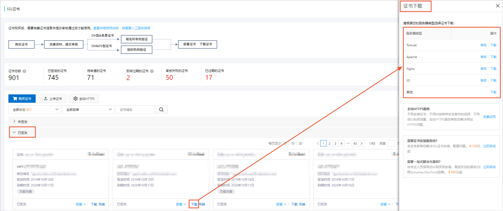
在证书下载侧页面中定位到Nginx服务器，并单击右侧操作栏的下载，将Nginx服务器证书压缩包下载到本地。
解压已下载保存到本地的Nginx证书压缩包文件。
解压后的文件夹中有2个文件：
证书文件：以.pem为后缀或文件类型。
密钥文件：以.key为后缀或文件类型。
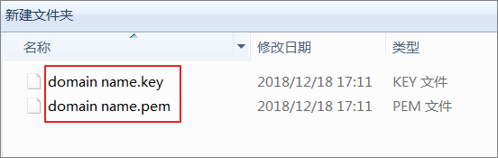
登录您的Nginx服务器，在Nginx安装目录（默认Nginx安装目录为/usr/local/nginx/conf）下创建cert目录，并将下载的证书文件和密钥文件拷贝到cert目录中。
修改Nginx安装目录/conf/nginx.conf文件。
1
2
3
4
5
6
7
8
9
10# 以下属性中以ssl开头的属性代表与证书配置有关，其他属性请根据自己的需要进行配置。
server {
listen 443 ssl; #SSL协议访问端口号为443。此处如未添加ssl，可能会造成Nginx无法启动。
ssl_certificate cert/domain name.pem; #将domain name.pem替换成您证书的文件名。
ssl_certificate_key cert/domain name.key; #将domain name.key替换成您证书的密钥文件名。
ssl_session_timeout 5m;
ssl_ciphers ECDHE-RSA-AES128-GCM-SHA256:ECDHE:ECDH:AES:HIGH:!NULL:!aNULL:!MD5:!ADH:!RC4; #使用此加密套件。
ssl_protocols TLSv1 TLSv1.1 TLSv1.2; #使用该协议进行配置。
ssl_prefer_server_ciphers on;
}保存文件后退出
执行以下命令重启服务器
1
2
3/usr/local/webserver/nginx/sbin/nginx -s reload # 重新载入配置文件
/usr/local/webserver/nginx/sbin/nginx -s reopen # 重启 Nginx
/usr/local/webserver/nginx/sbin/nginx -s stop # 停止 Nginx
参考文章
文章参考列表，感谢以下文章作者的贡献
- Nodejs安装及环境配置 https://www.jianshu.com/p/13f45e24b1de
- hexo从零开始到搭建完整 https://www.cnblogs.com/visugar/p/6821777.html
- Nginx安装配置|菜鸟教程 https://www.runoob.com/linux/nginx-install-setup.html
- 在Nginx服务器上安装证书 https://help.aliyun.com/document_detail/98728.html?spm=5176.2020520163.0.0.1a2356a7bjT30G